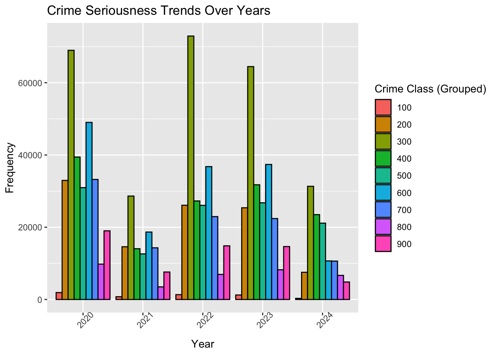
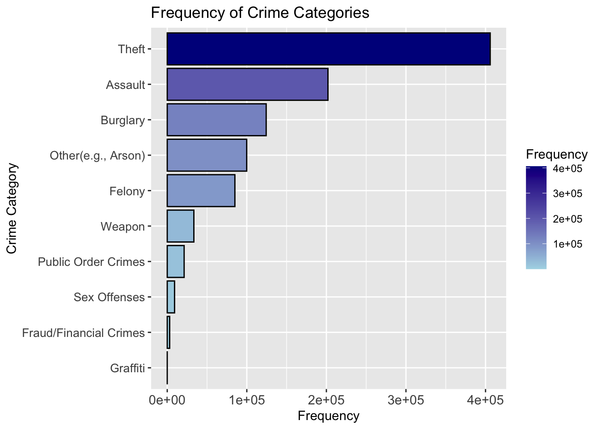
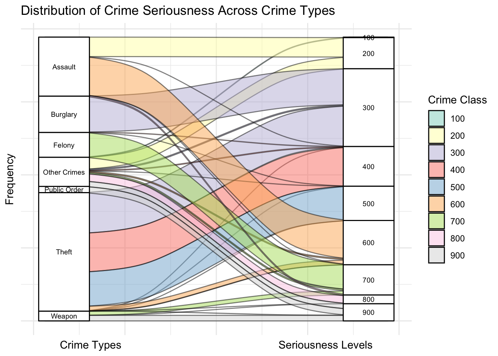
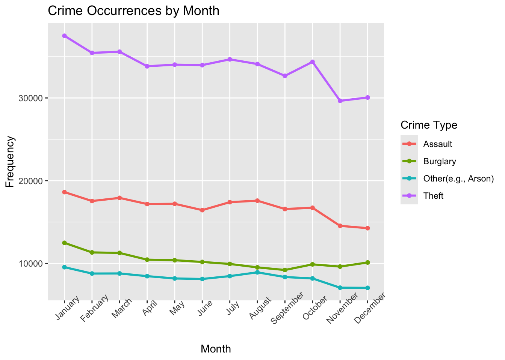
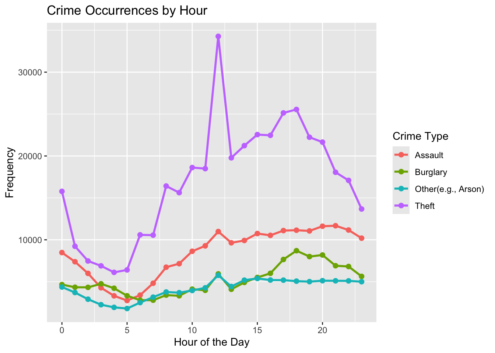
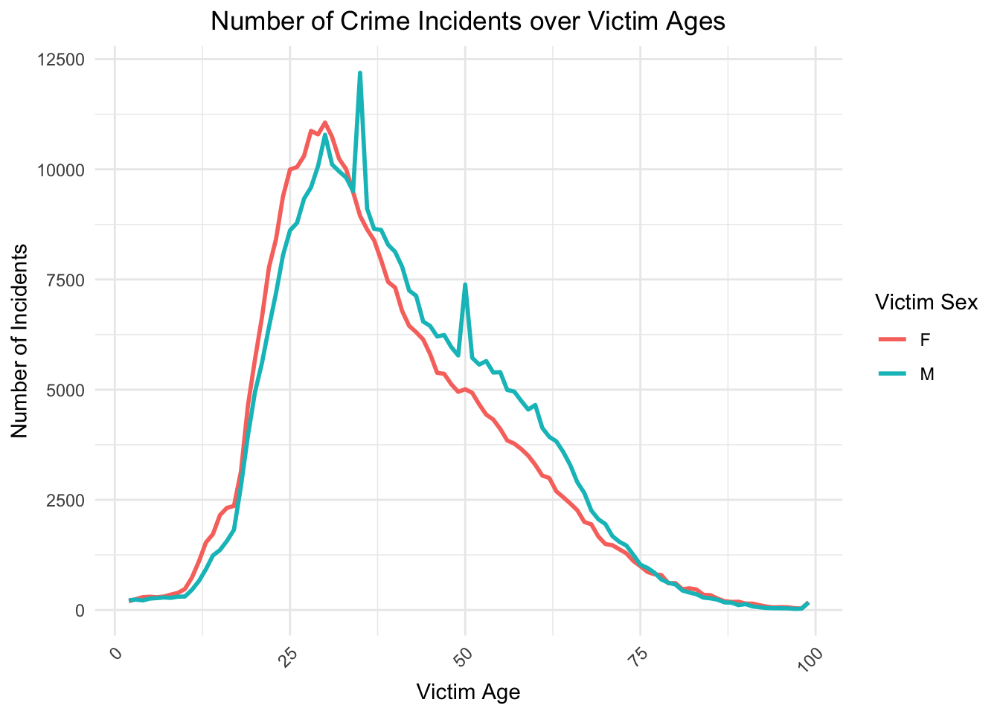
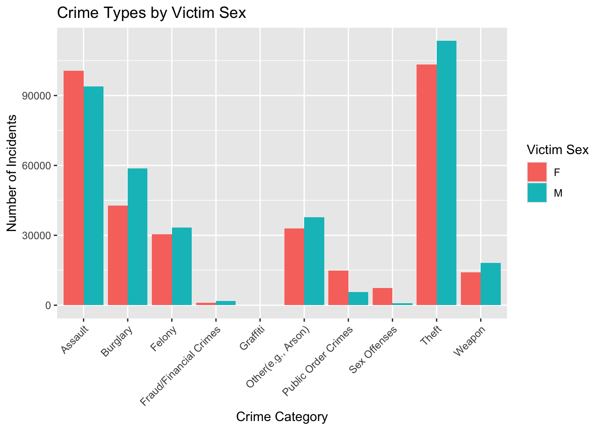
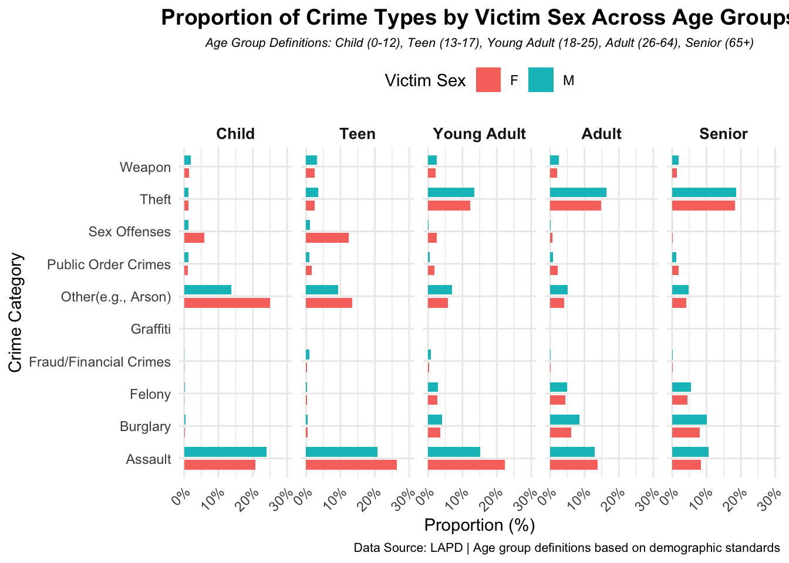
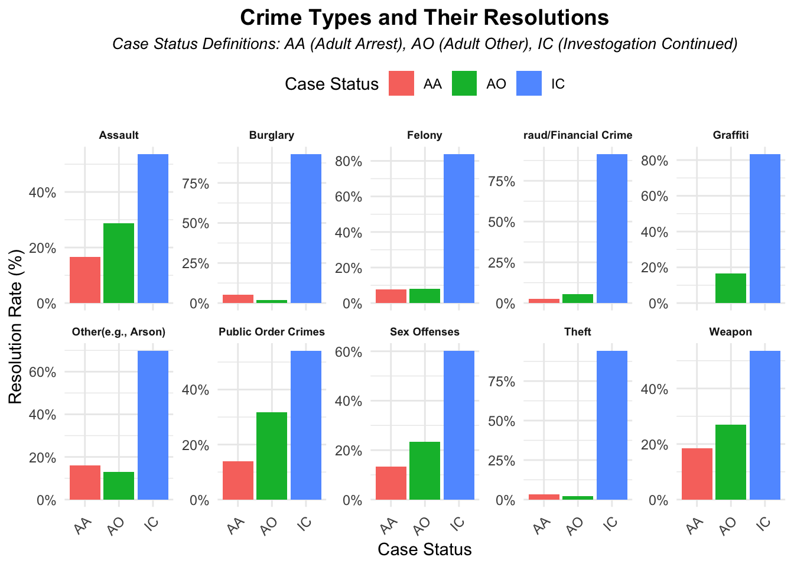
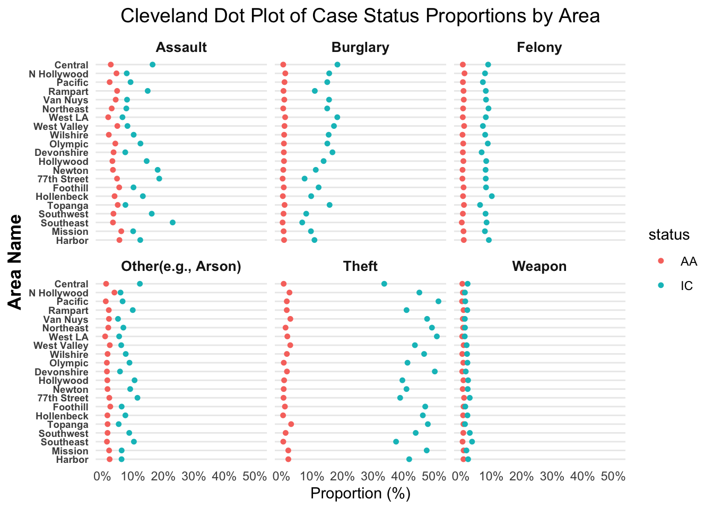

Code
library(dplyr)
library(ggplot2)
library(lubridate)
library(leaflet)
library(knitr)
library(ggalluvial)
library(readr)Here are packages we used in the project:
library(dplyr)
library(ggplot2)
library(lubridate)
library(leaflet)
library(knitr)
library(ggalluvial)
library(readr)In the previous section, we checked that the missing values were primarily concentrated in columns like Crm Cd 4, Crm Cd 3, and Crm Cd 2. But here to prevent the very small amount of missing value that would influence the graph visualizations, we removed all missing entries from the key columns that we will analyze further.
crime_data <- read.csv("~/Downloads/Crime_Data_from_2020_to_Present.csv")
crime_data <- crime_data |>
filter(!is.na(Crm.Cd.1)) |>
filter(!is.na(Crm.Cd.Desc))From the data records in variable Crm Cd 1 where a series crime class number were recorded for each committed crime, we can construct a bar chart showing the amount of crime across different seriousness over years. According to Explanation of this dataset from Los Angeles Police Department, the lower class number indicate more serious case.
crime_data$DATE_OCC <- as.Date(crime_data$DATE.OCC, format="%m/%d/%Y")
crime_data$Year <- year(crime_data$DATE_OCC)
crime_data$Crm.Cd.1.Class <- floor(crime_data$Crm.Cd.1 / 100) * 100
seriousness_by_year <- crime_data |>
group_by(Year, Crm.Cd.1.Class) |>
summarize(Count = n(), .groups = "drop")
ggplot(seriousness_by_year, aes(x = factor(Year), y = Count, fill = factor(Crm.Cd.1.Class))) +
geom_bar(stat = "identity", position = "dodge", color = "black") +
labs(title = "Crime Seriousness Trends Over Years",
x = "Year",
y = "Frequency",
fill = "Crime Class (Grouped)") +
theme(axis.text.x = element_text(angle = 45))
From the graph, we can observe that extreme cases of small crimes and large crimes consistently tend to have a rather low frequency, likely due to their rarity. Although there are some variations in the number of crimes across different seriousness levels over the five years, the dominance of crime class 300 implies that crimes with moderate seriousness, such as robbery, are more common in LA.
The bar chart also shows a dramatic decrement in crime in 2021 compared to 2020, followed by a relative increment in 2022 and 2023. Based on the context, the decrease in crimes could have been influenced by the quarantine policies during COVID-19 start from the end of 2020 to 2021. Later, as people returned to normal life and the economy recovered, the number of crimes also returned to a more consistent pattern. And the overall lower number of crimes in 2024 might be cause by the incomplete data.
But apart from external factors (like economy), the pattern of crime seriousness seems to be quite stable over years.
Next, we can try to verify our insight from question 5.1.1 by examining the types of prevalent crimes. Crm Cd Desc records a series of detailed description of the committed crime. However, since these descriptions are highly specific, we group them by key words to make 9 broader categories to present the data more effectively for analysis. We categorize all crime types into 9 main categories: assault, theft, burglary, sex offenses, graffiti, financial crimes, public order crimes, weapon, felony, and the rest are categorized into other.
grouped_data <- crime_data |>
mutate(Crime.Category = case_when(
grepl("ASSAULT|BATTERY|ABUSE", Crm.Cd.Desc, ignore.case = TRUE) ~ "Assault",
grepl("THEFT|STOLEN", Crm.Cd.Desc, ignore.case = TRUE) ~ "Theft",
grepl("BURGLARY|SHOPLIFTING", Crm.Cd.Desc, ignore.case = TRUE) ~ "Burglary",
grepl("SEX|RAPE|ORAL", Crm.Cd.Desc, ignore.case = TRUE) ~ "Sex Offenses",
grepl("GRAFFITI|DAMAGE", Crm.Cd.Desc, ignore.case = TRUE) ~ "Graffiti",
grepl("FRAUD|BUNCO|FORGERY|UNAUTHORIZED|EXTORTION", Crm.Cd.Desc, ignore.case = TRUE) ~ "Fraud/Financial Crimes",
grepl("RESTRAINING|PHONE CALLS|THREATENING|LETTER", Crm.Cd.Desc, ignore.case = TRUE) ~ "Public Order Crimes",
grepl("WEAPON", Crm.Cd.Desc, ignore.case = TRUE) ~ "Weapon",
grepl("VANDALISM|FELONY", Crm.Cd.Desc, ignore.case = TRUE) ~ "Felony",
TRUE ~ "Other(e.g., Arson)"
))
crime_summary <- grouped_data |>
group_by(Crime.Category) |>
summarize(Frequency = n(), .groups = "drop") |>
arrange(Frequency)
ggplot(crime_summary, aes(x = reorder(Crime.Category, Frequency), y = Frequency, fill = Frequency)) +
geom_bar(stat = "identity", color = "black") +
coord_flip() +
labs(title = "Frequency of Crime Categories",
x = "Crime Category",
y = "Frequency",
fill = "Frequency") +
scale_fill_gradient(low = "lightblue", high = "darkblue") +
theme(axis.text.x = element_text(size = 11), axis.text.y = element_text(size = 10))
We also include an alluvial graph here to highlight the distribution of crime seriousness levels for various crime types we defined above. But for better visualization, we exclude the 3 less frequent crime types.
filtered_data <- grouped_data |>
filter(!Crime.Category %in% c("Fraud/Financial Crimes", "Graffiti", "Sex Offenses")) |>
group_by(Crime.Category, Crm.Cd.1.Class) |>
summarize(Frequency = n(), .groups = "drop")
filtered_data$Crm.Cd.1.Class <- as.factor(filtered_data$Crm.Cd.1.Class)
filtered_data$Crime.Category <- recode(filtered_data$Crime.Category,
"Other(e.g., Arson)" = "Other Crimes",
"Public Order Crimes" = "Public Order")
ggplot(filtered_data,
aes(axis1 = Crime.Category, axis2 = Crm.Cd.1.Class, y = Frequency)) +
geom_alluvium(aes(fill = Crm.Cd.1.Class), width = 1/8, color = "black") +
geom_stratum(width = 1/6, fill = "white", color = "black") +
geom_text(stat = "stratum", aes(label = after_stat(stratum)), size = 2.5) +
scale_fill_brewer(type = "qual", palette = "Set3") +
labs(title = "Distribution of Crime Seriousness Across Crime Types",
x = "Crime Types Seriousness Levels",
y = "Frequency",
fill = "Crime Class") +
theme_minimal() +
theme(axis.text.x = element_text(angle = 45)) +
theme(
axis.text.x = element_blank(),
axis.text.y = element_blank()
)
Based on the frequecy list, it is obvious that most prevalent record cases are theft related crimes. This seems to align with the insight from the previous question, where crimes of moderate seriousness were shown to be the most prevalent. And our alluvial graph also indicate the same idea.
Theft and burglary, which are less violent but common crime, are reasonably belong to crime class 300-500. This can also proved by the alluvial graph where theft crime have cases from seriousness 300-500 and burglary mainly consist by cases from seriousness class 300.
Then we can see assault, including battery and abuse, also take a great proportion of total recorded crimes. It is not surprising for this result as disputes with homeless people and mental illness are not uncommon in Los Angeles. What’s interesting is that assault consist cases from both seriousness class 600 and 300. This might depends on the type of assault that being conducted.
On the contrary, fraud/financial crime and graffiti are less often to be caught. It could because it is harder to caught those suspects. But overall they represent more specific or severe cases that occur in smaller numbers.
Before we dive into this question, let’s see how may distinct areas are recorded in this data set.
grouped_data |>
distinct(AREA, AREA.NAME) |>
arrange(AREA) |>
kable(col.names = c("Area Code", "Area Name"), align = "c")| Area Code | Area Name |
|---|---|
| 1 | Central |
| 2 | Rampart |
| 3 | Southwest |
| 4 | Hollenbeck |
| 5 | Harbor |
| 6 | Hollywood |
| 7 | Wilshire |
| 8 | West LA |
| 9 | Van Nuys |
| 10 | West Valley |
| 11 | Northeast |
| 12 | 77th Street |
| 13 | Newton |
| 14 | Pacific |
| 15 | N Hollywood |
| 16 | Foothill |
| 17 | Devonshire |
| 18 | Southeast |
| 19 | Mission |
| 20 | Olympic |
| 21 | Topanga |
So it turns out that there are 21 areas here. Let’s take the top 2 common crime type from our previous result and investigate where do they usually happened. Since the top 2 crime type are theft and assault, we filter them separately on the data set while group by area name to make two interactive maps for difference comparison.
theft_geo_map <- grouped_data |>
filter(Crime.Category == "Theft") |>
group_by(AREA.NAME) |>
summarize(Frequency = n(), Latitude = mean(LAT), Longitude = mean(LON), .groups = "drop")
leaflet(data = theft_geo_map) |>
addTiles() |>
addCircleMarkers(
lng = ~Longitude, lat = ~Latitude,
radius = ~sqrt(Frequency) / 5,
color = ~colorNumeric(palette = "Purples", domain = theft_geo_map $Frequency)(Frequency),
fillColor = ~colorNumeric(palette = "Purples", domain = theft_geo_map $Frequency)(Frequency),
fillOpacity = 0.7,
popup = ~paste("<b>Area:</b>", AREA.NAME, "<br>", "<b>Frequency:</b>", Frequency)
) |>
addLegend(
"bottomright",
pal = colorNumeric("Purples", domain = theft_geo_map$Frequency),
values = ~Frequency,
title = "Theft Frequency",
opacity = 1
) |>
addControl(
html = "<h3>Theft Crime in LAs</h3>",
position = "topright"
)For the theft frequency map, it shows that most areas have similar theft cases overall. However, some regions like Pacific, Southwest, Central, and even N. Hollywood display higher frequencies compared to others. We assume that the prevalence of theft crimes in these areas could be caused by tourist attractions and more active commercial activities. With crowds providing cover, thefts can more easily commit crimes. Meanwhile, areas like Foothill and Hollenbeck, which are labeled with lighter colors on the map, indicate lower theft crimes These places are more residential, located farther from economically developed regions, and have sparser populations. Consequently, theft crimes are less frequent in these areas.
This observation suggests that the judicial department should deploy more police forces to economically developed and densely populated areas to safeguard people’s property and reduce the high number of theft incidents.
assault_geo_map <- grouped_data |>
filter(Crime.Category == "Assault") |>
group_by(AREA.NAME) |>
summarize(Frequency = n(), Latitude = mean(LAT), Longitude = mean(LON), .groups = "drop")
leaflet(data = assault_geo_map) |>
addTiles() |>
addCircleMarkers(
lng = ~Longitude, lat = ~Latitude,
radius = ~sqrt(Frequency) / 5,
color = ~colorNumeric(palette = "Purples", domain = assault_geo_map $Frequency)(Frequency),
fillColor = ~colorNumeric(palette = "Purples", domain = assault_geo_map $Frequency)(Frequency),
fillOpacity = 0.7,
popup = ~paste("<b>Area:</b>", AREA.NAME, "<br>", "<b>Frequency:</b>", Frequency)
) |>
addLegend(
"bottomright",
pal = colorNumeric("Purples", domain = assault_geo_map $Frequency),
values = ~Frequency,
title = "Assault Frequency",
opacity = 1
) |>
addControl(
html = "<h3>Assault Crime in LA</h3>",
position = "topright"
)From the map of assault crime frequency, it shows that areas such as 77th Street, Southeast, and Central have higher frequencies of assault crimes compared to other regions. These areas overlap with regions where more theft crimes occur, and they also share features such as more prosperous commerce and higher population density. In contrast, areas farther from the central region seem to experience fewer assault crimes. Residents in these areas are more likely to be peaceful locals.
So we can infer that factors contributing to higher crime rates for both theft and assault could include economic conditions, living challenges, and population density. Areas with high populations but insufficient police resources may face higher crime rates. Assault frequencies tend to be higher in city centers, transportation hubs, and entertainment areas, where interactions and conflicts are more likely to occur.
Now we have some insights into the patterns and factors influencing specific types of crime, we try to provide more accurate suggestions for interventions. To achieve this, it is important to also take a look on how time factors might affect crime patterns further.
We pick the top 4 crime types and examine how their frequency varies on different months and times of the day.
top_4_crimes <- grouped_data |>
count(Crime.Category) |>
arrange(desc(n)) |>
slice(1:4) |>
pull(Crime.Category)
top_crimes_data <- grouped_data |>
filter(Crime.Category %in% top_4_crimes) |>
mutate(
Month = format(as.Date(DATE_OCC), "%B"),
Hour = as.integer(TIME.OCC / 100)
)
monthly_data <- top_crimes_data |>
group_by(Month, Crime.Category) |>
summarize(Count = n(), .groups = "drop") |>
mutate(Month = factor(Month, levels = month.name))
#plot 1: monthly
ggplot(monthly_data, aes(x = Month, y = Count, group = Crime.Category, color = Crime.Category)) +
geom_line(linewidth = 1) +
geom_point(linewidth = 2) +
labs(
title = "Crime Occurrences by Month",
x = "Month",
y = "Frequency",
color = "Crime Type"
) +
theme(axis.text.x = element_text(angle = 45))Warning in geom_point(linewidth = 2): Ignoring unknown parameters: `linewidth`
From the monthly graph, it is not surprising to see that theft remains a year-round common crime. However, the trend shows a slight decrease from the beginning of the year to the end. The fluctuation in assault frequency is smaller, with a noticeable decrease in November and December, which might be influenced by the holiday season. In addition, both burglary and other crimes exhibit stable trends, suggesting their frequencies are not significantly affected by season or month.
Overall, while certain types of crimes show sightly variations in frequency across different months, the monthly graph indicates that there isn’t a strong relationship between month and crime rate.
hourly_data <- top_crimes_data |>
group_by(Hour, Crime.Category) |>
summarize(Count = n(), .groups = "drop")
# Plot 2: Hourly
ggplot(hourly_data, aes(x = Hour, y = Count, group = Crime.Category, color = Crime.Category)) +
geom_line(size = 1) +
geom_point(size = 2) +
labs(
title = "Crime Occurrences by Hour",
x = "Hour of the Day",
y = "Frequency",
color = "Crime Type"
)Warning: Using `size` aesthetic for lines was deprecated in ggplot2 3.4.0.
ℹ Please use `linewidth` instead.
The hour graph also provides some interesting insights. Theft crimes show a dramatic increase during the morning period, especially between 6 AM and 12 PM, and gradually decrease from 6 PM to the early morning of next day. This pattern aligns with opportunities for theft when people are commuting to or from work. Assaults increase during the daytime and decline after 9 PM, which might related to social interactions in public spaces during the day. Burglary shows slightly higher occurrences in the evening hours, as criminals often rely on the cover of darkness. And other crimes remain consistent throughout the day.
Compared to the monthly graph, the hour graph gives us more valuable insights about how time influences crime patterns. The morning period is the peak for theft and assault crimes, which might due to commuting traffic and crowded public spaces. The evening is the peak for burglaries. Based on these observations, we recommend strengthening public security by increasing police presence in high-traffic areas during morning rush hours and enhancing security in residential areas in night time to reduce burglary cases.
Having a better understanding of patterns and trends of criminal incidents, we want to analyze the nature of those crimes. In order to answer this main question, we analyze five sub-questions:
crime_data <- read_csv("~/Downloads/Crime_Data_from_2020_to_Present.csv", show_col_types = FALSE)
colnames(crime_data) <- c('dr_no','date_rptd','date_occ','time_occ','area','area_name','rep_dis_no','part_1_2',
'crime_code','crime_desc','mocodes','victim_age',
'victim_sex','victim_descent','premise_cd','premise_desc',
'weapon_cd','weapon_desc','status','status_desc','crime_cd_1',
'crime_cd_2','crime_cd_3','crime_cd_4','location','cross_street','lat','lon')
grouped_data <- crime_data |>
mutate(Crime_Category = case_when(
grepl("ASSAULT|BATTERY|ABUSE", crime_desc, ignore.case = TRUE) ~ "Assault",
grepl("THEFT|STOLEN", crime_desc, ignore.case = TRUE) ~ "Theft",
grepl("BURGLARY|SHOPLIFTING", crime_desc, ignore.case = TRUE) ~ "Burglary",
grepl("SEX|RAPE|ORAL", crime_desc, ignore.case = TRUE) ~ "Sex Offenses",
grepl("GRAFFITI|DAMAGE", crime_desc, ignore.case = TRUE) ~ "Graffiti",
grepl("FRAUD|BUNCO|FORGERY|UNAUTHORIZED|EXTORTION", crime_desc, ignore.case = TRUE) ~ "Fraud/Financial Crimes",
grepl("RESTRAINING|PHONE CALLS|THREATENING|LETTER", crime_desc, ignore.case = TRUE) ~ "Public Order Crimes",
grepl("WEAPON", crime_desc, ignore.case = TRUE) ~ "Weapon",
grepl("VANDALISM|FELONY", crime_desc, ignore.case = TRUE) ~ "Felony",
TRUE ~ "Other(e.g., Arson)"
))
crime_summary <- grouped_data |>
filter(victim_sex == "F" | victim_sex == "M" ) |>
filter(victim_age >0)|>
group_by(victim_age, victim_sex) |>
summarise(Count = n(), .groups = "drop")
ggplot(crime_summary, aes(x = victim_age, y = Count, color = victim_sex)) +
geom_line(size = 1) +
labs(
title = "Number of Crime Incidents over Victim Ages",
x = "Victim Age",
y = "Number of Incidents",
color = "Victim Sex"
) +
theme_minimal() +
theme(
axis.text.x = element_text(angle = 45, hjust = 1),
plot.title = element_text(hjust = 0.5)
)
Remarks:
The two lines for female and male victims show some overlap, with their overall trends being similar. For female victims, crime incidents peak between the ages of 25–37, after which there is a consistent decreasing trend. For male victims, the peak occurs slightly later, between ages 35–37, with a secondary peak around age 50. Before age 35, more incidents occur to females, but after that, males experience higher incident rates.
For both genders, adults aged 20–40 are the most frequent targets of crimes. This group appears to be the most accessible or vulnerable to criminal activities due to higher exposure or lifestyle-related factors.
From our analysis, young adults and adults (20–40 years old) are mostly affected by crimes with crime rates peaking during this period. Younger females are more likely to be victims, particularly in their mid-to-late 20s, while middle-aged males are more likely to be victims, especially in their late 30s to 50s. The gap in crime incidents between genders narrows with age, suggesting possibledifferences in vulnerbility to crimes based on age and sex.
grouped_data |>
filter(victim_sex == "F" | victim_sex == "M" ) |>
filter(victim_age >0)|>
ggplot(aes(x = Crime_Category, fill = victim_sex)) +
geom_bar(position = "dodge") + # Use dodge for side-by-side bars
labs(
title = "Crime Types by Victim Sex",
x = "Crime Category",
y = "Number of Incidents",
fill = "Victim Sex"
) +
theme(axis.text.x = element_text(angle = 45, hjust = 1))
Remarks:
Theft and assault are the most frequent crime types happen to both females and males.
Females are more likely to experience assault, sex offenses, and public order crimes such as threatening or harassment. In contrast, males are more affected by burglary, felony, fraud, crimes like arson, theft, and weapon-related incidents.
Gender differences are subtle in crimes like felony and weapon involved cases, suggesting these crimes are less influenced by gender societal patterns.
Theft and assault are the most frequently reported crimes. Female victims are more likely to experience assault, public order crimes, and sex offenses, while males are more affected by burglary, felony, fraud, other(e.g., Arson), theft , and weapon involved crimes. These differences highlight the role of gender as a contributing factor in the relationship between types of crimes and gender. However, certain crimes such as felony and weapon related offenses show minimal gender differences.
Since there are over 100 values of ages recorded including 0 and some negative values, it’s hard to know the meanings behind those values, we choose to remove such values. In addition, for better analyzing, we first categorize age groups by child, teen, young adult, adult, and senior.
age_grouped_data<-grouped_data |>
filter(victim_sex == "F" | victim_sex == "M" ) |>
filter(victim_age >0)|>
mutate(Age_Group = case_when(
victim_age < 12 ~ "Child",
victim_age >= 12 & victim_age < 18 ~ "Teen",
victim_age >= 18 & victim_age < 21 ~ "Young Adult",
victim_age >= 18 & victim_age < 65 ~ "Adult",
victim_age >= 65 ~ "Senior"
))|>
mutate(Age_Group = factor(Age_Group, levels = c("Child", "Teen", "Young Adult", "Adult", "Senior")))
age_grouped_data|>
group_by(Age_Group, victim_sex, Crime_Category) |>
summarise(Count = n(), .groups = "drop") |>
group_by(Age_Group) |>
mutate(Proportion = Count / sum(Count) * 100)|>
ggplot(aes(x = Crime_Category, y = Proportion, fill = victim_sex)) +
geom_bar(stat = "identity", position = position_dodge(width = 0.8), width = 0.6) +
facet_wrap(~ Age_Group, ncol = 5) + # Facet with 5 columns
labs(
title = "Proportion of Crime Types by Victim Sex Across Age Groups",
subtitle = "Age Group Definitions: Child (0-12), Teen (13-17), Young Adult (18-25), Adult (26-64), Senior (65+)",
caption = "Data Source: LAPD | Age group definitions based on demographic standards",
x = "Crime Category",
y = "Proportion (%)",
fill = "Victim Sex"
) +
scale_y_continuous(limits = c(0, 30), labels = scales::percent_format(scale = 1)) + # Standardized y-axis limits
theme_minimal() +
coord_flip()+
theme(
axis.text.x = element_text(angle = 45, hjust = 1),
strip.text = element_text(size = 10, face = "bold"),
plot.title = element_text(hjust = 0.5, size = 14, face = "bold"),
plot.subtitle = element_text(hjust = 0.5, size = 8, face = "italic"),
plot.caption = element_text(size = 8),
legend.position = "top"
)
Remarks:
For children, assault and crimes categorized as “other” (e.g., arson) are the most dominant incident types. Females are more affected by “other” crimes and sex offenses, while males are more affected by assault and weapon-related crimes. Gender does not significantly influence public order crimes or theft for this age group.
Teens mainly experience assault, other(e,g., arson), sex offenses, theft, and weapon. Females are more frequently victims of assault and sex offenses, with a significant gap of around 8% in the proportion of sex offenses compared to males.
Young adults exhibit a diverse crime exposure with theft, assault, burglary, felony, other,public order crimes, sex offenses, theft, and weapon. Females experience more assault, public order crimes, and sex offenses.
Adults show a similar crime exposure pattern to young adults, with females experiencing more assault, public order crimes, and sex offenses.
Seniors have a similar pattern but with significantly fewer sex offenses and more theft crimes. Males experience more crimes than females except for the public order type.
Crime types vary significantly across age groups. Children and teens are most affected by assault, other(e.g., Arson), and sex offenses, where females are significantly more vulnerable to sex offenses. Young adults, adults, and seniors face a broader range of crimes, including burglary, fraud, and theft, with similar proportions across categories. It’s worth noting that for all age groups, females experience more sex offenses than males, while males are more affected by weapon related crimes. These findings underscore the importance of tailoring prevention strategies to specific age groups and gender differences among crimes.
After having a better understanding of the relationship between victim characteristics like sex and age and criminal incidents, we want to further analyze how do resolution rates vary by different crime types.
After initial inspection of the crime records, we can see only a few crimes that are marked as JO, JA, CC, which represent juvenile other, juvenile arrest, case closed. For the sake of the analysis, we choose to only focus on AO, AA, and IC, which represent adult other, adult arrest, and investigation continued.
crime_summary2 <- grouped_data |>
group_by(Crime_Category, status) |>
summarise(Count = n(), .groups = "drop")|>
group_by(Crime_Category) |>
mutate(Percentage = Count / sum(Count) * 100) |>
filter(status == "AA" | status == "AO" |status == "IC")
ggplot(crime_summary2, aes(x = status, y = Percentage, fill = status)) +
geom_bar(stat = "identity") +
facet_wrap(~ Crime_Category, scales = "free_y", ncol = 5) +
labs(
title = "Crime Types and Their Resolutions",
subtitle = "Case Status Definitions: AA (Adult Arrest), AO (Adult Other), IC (Investogation Continued)",
x = "Case Status",
y = "Resolution Rate (%)",
fill = "Case Status"
) +
scale_y_continuous(labels = scales::percent_format(scale = 1)) +
theme_minimal() +
theme(
axis.text.x = element_text(angle = 45, hjust = 1),
plot.title = element_text(hjust = 0.5, size = 14, face = "bold"),
plot.subtitle = element_text(hjust = 0.5, size = 10, face = "italic"),
plot.caption = element_text(size = 8),
strip.text = element_text(size = 7, face = "bold"),
legend.position = "top"
)
Remark:
Across all crime types, the majority of cases are unresolved and still under investigation. Felonies, burglary, fraud, theft, and graffiti have higher unsolved cases.
We can see there tends to be more cases classified as “AO” (Adult Other) than “AA” (Adult Arrest),which means more cases involving an adult where no arrest was made, but some other action was taken. Assault, other(e.g., Arson), public order crimes, sex offenses, and weapon have relatively higher proportions of resolved cases (AA and AO statuses).
The analysis of case statuses reveals that most crimes remain unresolved (“IC” status). Among them, felony and graffiti have the highest proportion of unresolved cases that are still under investigation, which suggest the complexity of these cases and lack of clear evidence. Assault, weapon, public order crimes and other have relatively higher proportion of resolution rates, which may be due to nature of those cases: presence of witnesses, or supporting evidence such as surveillance cameras that’s nowadays common in public. This disparity shows the challenges of resolving certain crime types and the need for targeted strategies to improve case resolution rates.
Now we want to further see do crime resolution rates vary by different divisions of LAPD to have a better understanding of the nature of crimes.
area_case_summary <- grouped_data |>
group_by(area_name, status) |>
summarise(Count = n(), .groups = "drop")|>
group_by(area_name) |>
mutate(Proportion = Count / sum(Count) * 100) |>
mutate(area_name = reorder(area_name, -Proportion * (status == "IC")))|>
filter(status == "IC" |status == "AO" |status == "AA")
grouped_data |>
filter(status %in% c("AA", "IC"))|>
group_by(Crime_Category, area_name, status) |>
summarise(Count = n(), .groups = "drop")|>
group_by(area_name) |>
mutate(Proportion = Count / sum(Count) * 100) |>
filter(Crime_Category %in% c("Assault", "Burglary", "Felony", "Other(e.g., Arson)", "Theft", "Weapon"))|>
ggplot(aes(x = Proportion, y = reorder(area_name, Proportion), color = status)) +
geom_point(size = 1.25) +
facet_wrap(~ Crime_Category) +
labs(
title = "Cleveland Dot Plot of Case Status Proportions by Area",
x = "Proportion (%)",
y = "Area Name",
color = "status"
) +
scale_x_continuous(labels = scales::percent_format(scale = 1)) +
theme_minimal() +
theme(
panel.grid.major.x = element_blank(),
panel.grid.minor.x = element_blank(),
axis.title.y = element_text(size = 13, face = "bold"),
axis.text.y = element_text(size = 7, face = "bold"),
plot.title = element_text(hjust = 0.5, size = 14),
strip.text = element_text(size = 10, face = "bold"),
)
Remark:
For all crime types and all districts of LAPD, there are more unresolved cases.The gap between resolved and unresolved cases is the largest when it come to theft.
We can see for burglary, felony, and weapon involved crimes, they have more consistent resolution rates across all divisions of LAPD. All divisions have relatively higher resolution rates for assault.
Mission division has the highest resolution rate for assault; North Hollywood has the highest resolution rate for other crimes like arson, and Topanga has the highest resolution rate for theft.
The resolution of specific crime types vary across LAPD districts. All neighborhoods have more unresolved cases. Overall, assault and other crimes like arson have higher resolution rates. There’s slight inconsistency across different neighborhoods regarding efficiency in solving crimes, which may highlight disparities in justice outcomes and the need for equitable resource distribution.